Project
Mobile app concept · Weekend trip planning
UX/UI DESIGN · CASE STUDY
From too many options to one weekend plan
A personalized short-trip planning concept that connects inspiration, recommendations and a flexible itinerary in one experience.
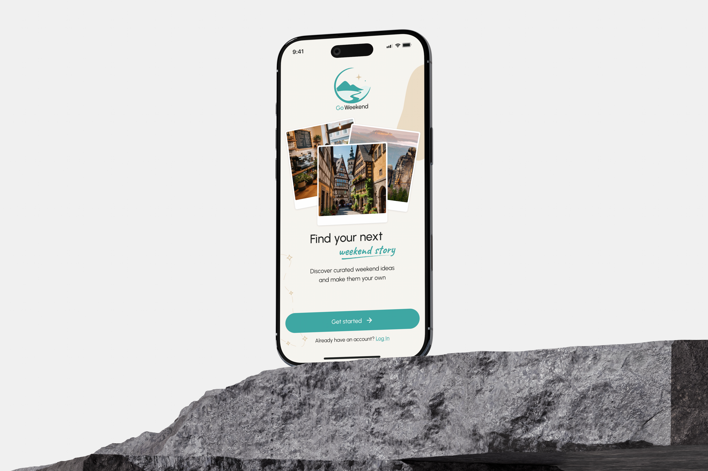
GoWeekend is a mobile app concept for discovering and planning short trips in Germany. The project began with a broad question: how could planning a weekend getaway become easier and more enjoyable? Through research and design exploration, this idea developed into a personalized experience that connects inspiration, recommendations and flexible planning.
Mobile app concept · Weekend trip planning
UX research · UX/UI design · User flows · Wireframing · Prototyping
Solo travelers, couples, families and groups of friends planning short trips in Germany.
Figma · FigJam
At the beginning, I assumed that planning a short trip could become frustrating because of the number of decisions involved. But I didn't yet know which parts of the process caused the most difficulty — discovering destinations, comparing options or organizing the trip.
I started with three assumptions to explore through competitor analysis and user research.
Travelers may need to switch between multiple services to collect ideas, routes, accommodation and activities.
Too many destinations and competing criteria may make choosing a suitable trip more difficult than finding interesting places.
Available time, budget, transportation and travel companions may influence what makes a weekend plan realistic.
Where do people struggle most when planning a short getaway — finding ideas, comparing options or turning a choice into a workable plan?
Before defining the product direction, I created three proto-personas based on initial audience assumptions. They helped me explore how different lifestyles, travel companions and planning habits might influence user needs. These hypotheses provided a starting point for the research that followed.
Works in an office and enjoys short trips, but has limited time to search for ideas and compare destinations.
Initial design considerationMake it easy to discover relevant ideas and move quickly towards a suitable option.
Plans weekends with his partner and two children. He needs to balance family interests, practical arrangements and budget.
Initial design considerationBring family suitability, logistics and practical trip details into the decision.
Enjoys discovering new places but finds comparing options and organizing a trip more complicated than expected.
Initial design considerationOffer understandable recommendations and reduce unnecessary planning steps.
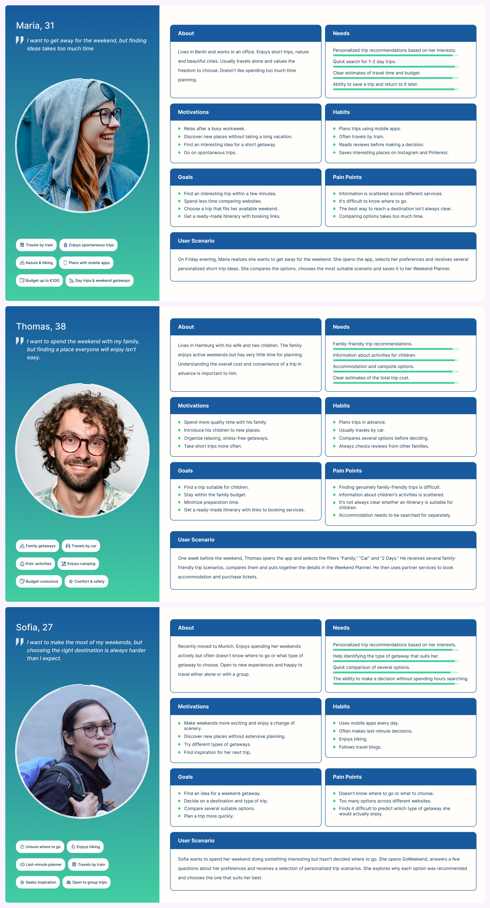
I analyzed ADAC Trips and Komoot to understand how existing products help users discover destinations, find activities and plan trips. I focused on their main features, strengths and limitations, looking for potential gaps in the weekend-planning experience.
Primary focus: Destination discovery, travel inspiration and collecting ideas for future trips.
What works well: A skippable onboarding process, location-based recommendations and multiple ways to explore destinations. Travel categories, saved places and the "My Trips" feature support both inspiration and manual planning.
What remains difficult: Personal preferences are not fully integrated into the main discovery flow. Users still need to compare options and manually combine destinations, activities and practical details into a complete itinerary.
UX takeaway: Discovering interesting places is well supported, but turning those ideas into a coordinated weekend plan requires additional effort.
Primary focus: Discovering, planning and navigating outdoor routes.
What works well: Personalized activity preferences, detailed route information, navigation and community recommendations. Users can discover routes suited to different activities and experience levels, as well as save and create their own tours.
What remains difficult: The experience is primarily organized around individual outdoor routes. Planning a complete weekend involving accommodation, budget, transportation and additional activities requires other tools or services.
UX takeaway: Strong route-planning functionality does not necessarily address the broader needs of organizing a complete weekend getaway.
The comparison suggested a potential gap between discovering places or activities and turning them into a complete weekend plan. Both products support important parts of the journey, but neither fully connects personalized discovery with practical trip organization. This became an initial hypothesis to explore through user research, rather than a conclusion about users' actual needs.
To examine my initial assumptions, I conducted an anonymous online survey with 22 respondents and reviewed publicly available interviews as supplementary desk research. I focused on three questions: what makes short-trip planning difficult, which constraints influence decisions, and where guidance might be useful.
This was an exploratory survey, not a representative study. The sample was strongly weighted toward people who travel with children (18 of 22 respondents). The figures below describe these respondents, not all travelers. The public interviews were reviewed for context, not conducted as part of this project.
Rather than treating every response as a separate insight, I grouped the findings by the decisions they could inform.
16 of 22 respondents said they return to searching and planning over multiple days.
Design implication: Make it easy to save a trip and continue planning later.
21 of 22 selected budget as a factor influencing their trip choice. Distance and travel time were selected by 14 of 22 (63.6%).
Design implication: Surface estimated costs and travel considerations before users commit to a plan.
9 of 22 selected balancing everyone's interests; another 9 selected finding accommodation. Finding information and estimating total cost were each selected by 7 of 22 (31.8%).
Design implication: Show practical details together and let people adapt suggested activities.
18 of 22 rated interest-based trip suggestions 4 or 5 out of 5 for usefulness.
Design implication: Explore a preference-led starting point rather than an unfiltered list of destinations.
14 of 22 respondents (63.6%) selected help with budget and constraints as a useful role for a digital assistant. In a separate question, 15 of 22 (68.2%) selected clarifying itinerary details as a potential use for in-app chat. These are stated preferences, not evidence of actual feature adoption.
The survey did not establish that everyone needs a new travel app. It suggested an opportunity to support the work that follows inspiration: balancing constraints, evaluating a realistic option and keeping the plan editable. I used this as a direction to explore in the journey map and interface design.
Using the survey findings, competitive observations and initial assumptions, I mapped a proposed future-state journey. It illustrates where GoWeekend could help; it does not describe a journey observed in usability testing.
Six stages from inspiration to a flexible itinerary
Wants to get away but doesn't know where to go.
No clear destination or starting point.
Help users identify their interests through short onboarding.
Describes budget, distance, transport, duration and companions.
Hard to turn vague wishes into clear preferences.
Offer short preference questions, with optional conversational help when needed.
Reviews suggested trips and explores why they fit.
Too many options can make choosing difficult.
Show a curated selection of relevant trip scenarios.
Compares budget, travel time, activities and accommodation.
Trip details are difficult to compare across services.
Present essential trip details in a consistent comparison view.
Adds activities and adjusts the suggested itinerary.
Activities, transport and timing need to work together.
Bring trip details together in an editable planner.
Revisits saved trips and updates details when plans change.
Plans and information may become outdated before departure.
Keep saved itineraries accessible and easy to edit.
The journey highlighted a key design opportunity: helping users move from uncertainty to a confident choice, then turning that choice into a flexible weekend plan.
The initial challenge was broad: make short-trip planning easier. Research and journey mapping helped narrow the design opportunity to a more specific moment — deciding which trip is realistic and making it actionable.
This led to a concept built around a small set of personalized scenarios, clear practical details and an itinerary users can adjust.
I translated the research insights into a guided planning experience built around four connected steps: understanding preferences, discovering relevant trips, evaluating options and creating a flexible itinerary.
A short quiz gathers travel companions, interests, available time and preferred distance. Additional constraints, including budget, can be refined during discovery.
Personalized recommendations help users discover a small selection of relevant weekend trips.
Trip details bring together activities, travel time, transport options and estimated costs to support decisions.
A flexible Weekend Planner lets users adjust activities and save their preferred itinerary.
Ask GoWeekend offers optional natural-language discovery and refinement. The screens illustrate an intended AI-assisted interaction; the assistant has not been implemented or tested as a live AI system.
I mapped the main journey from onboarding to a saved weekend plan. Users can explore trip recommendations without mandatory registration, return to alternative scenarios and sign in when they are ready to start planning.
A proposed user journey with two decision points that support flexible exploration.
Users enter the app, can skip registration and complete onboarding before setting their preferences.
A short quiz captures travel interests, available time, preferred distance and travel companions.
Users explore the personalized feed, discover weekend scenarios and open trip details to evaluate their options.
Return to recommendations and explore other scenarios.
← Back to recommendationsSelect the scenario and add it to the Planner.
Log in or create an account, then continue to the Weekend Planner.
Continue directly to the Weekend Planner.
Users organize activities and adjust their selected trip in the Weekend Planner.
Users review the weekend summary, save their trip and return to it later through My Trips.
The flow prioritizes exploration before commitment: users can discover and evaluate options first, then move into detailed planning once they have found a suitable trip.
I began with low-fidelity wireframes to define the main screens and organize the user journey. I explored onboarding, destination discovery, filtering, trip details and itinerary planning, focusing on information hierarchy and navigation before introducing visual styling.
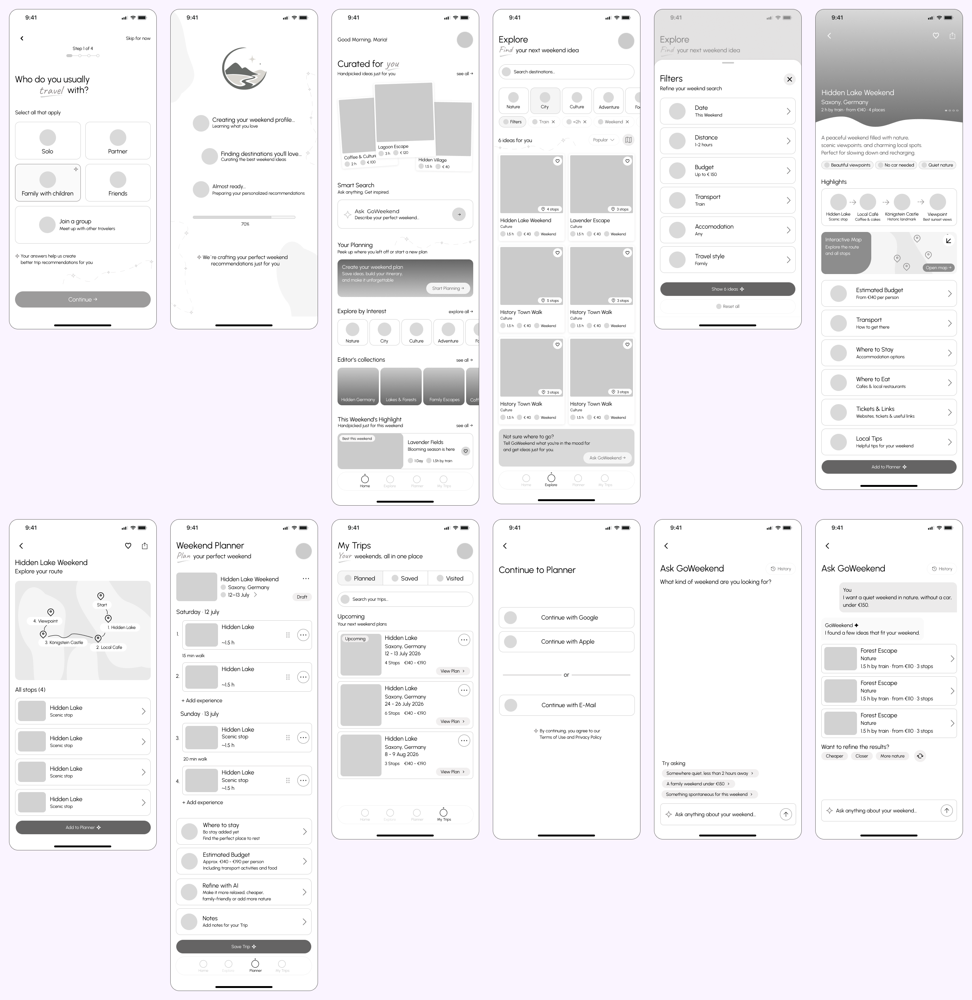
Before exploring interface styles, I used a moodboard to define the emotional direction of GoWeekend. I wanted to capture the feeling of stepping away from everyday routines: calm, freedom, curiosity and anticipation.
Natural light, open landscapes, water and star-filled skies evoke a sense of escape and discovery. Soft textures, balanced compositions and carefully arranged objects reflect a more intentional, curated experience rather than an overwhelming collection of choices.
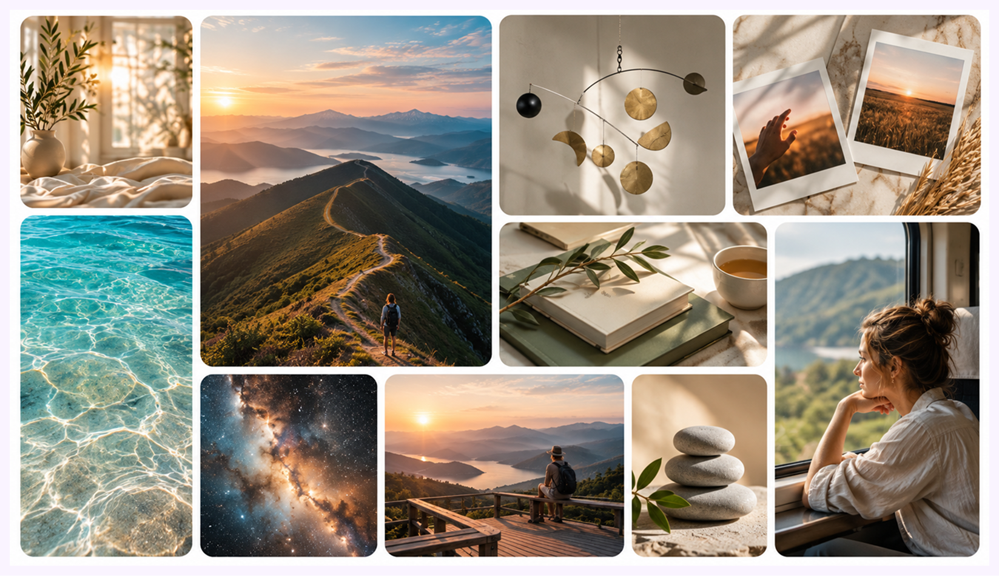
I then explored interface references to understand how the intended atmosphere could translate into a digital experience. I focused on editorial typography, image-led layouts, layered travel cards, clear navigation and structured itinerary views.
These references informed the visual direction without serving as templates. I used them to explore how inspiration and practical planning information could coexist in a clear, approachable interface.
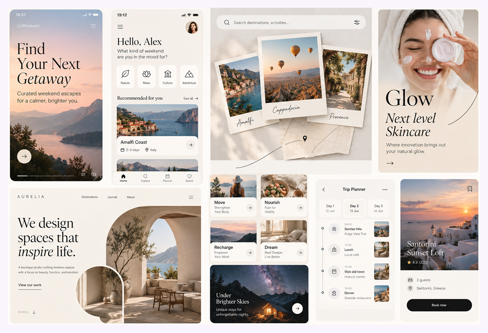
I developed a visual language combining soft turquoise, warm neutrals, travel photography and a mix of clean and expressive typography. The aim was to create an interface that feels welcoming and inspiring while keeping practical information easy to navigate.
To maintain consistency across the app, I defined typography and color styles and created reusable UI components. The selection below includes buttons, search fields, navigation elements, preference controls and trip cards.
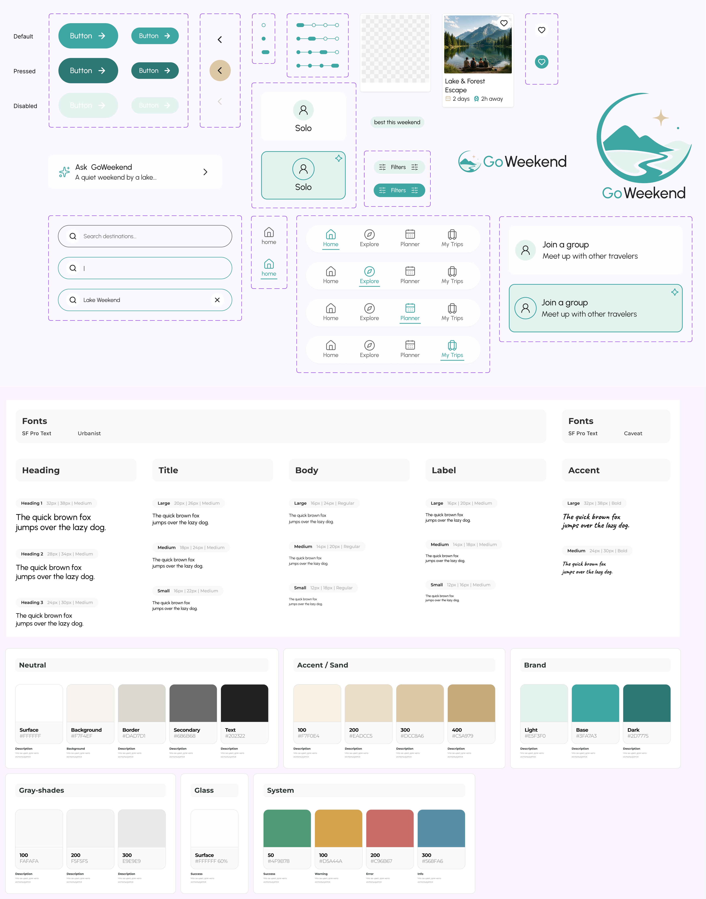
I translated the research and planning insights into six key UX decisions. Each one addresses a specific challenge in the weekend planning journey, helping users move from initial inspiration to a flexible trip plan.
Instead of immediately presenting a large catalog, GoWeekend introduces four short questions about travel companions, interests, available time and preferred distance.
This creates a starting point for personalized recommendations while keeping the onboarding experience short and focused.
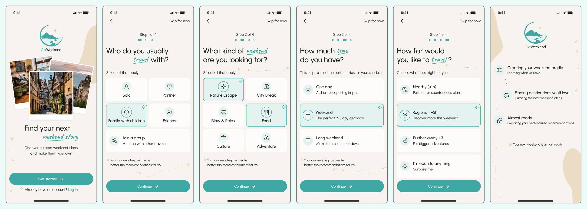
The Home screen introduces a curated selection of weekend ideas based on user preferences. Explore offers categories, search and filters for those who prefer to browse independently.
Together, these two approaches balance guided discovery with the freedom to explore and refine results.
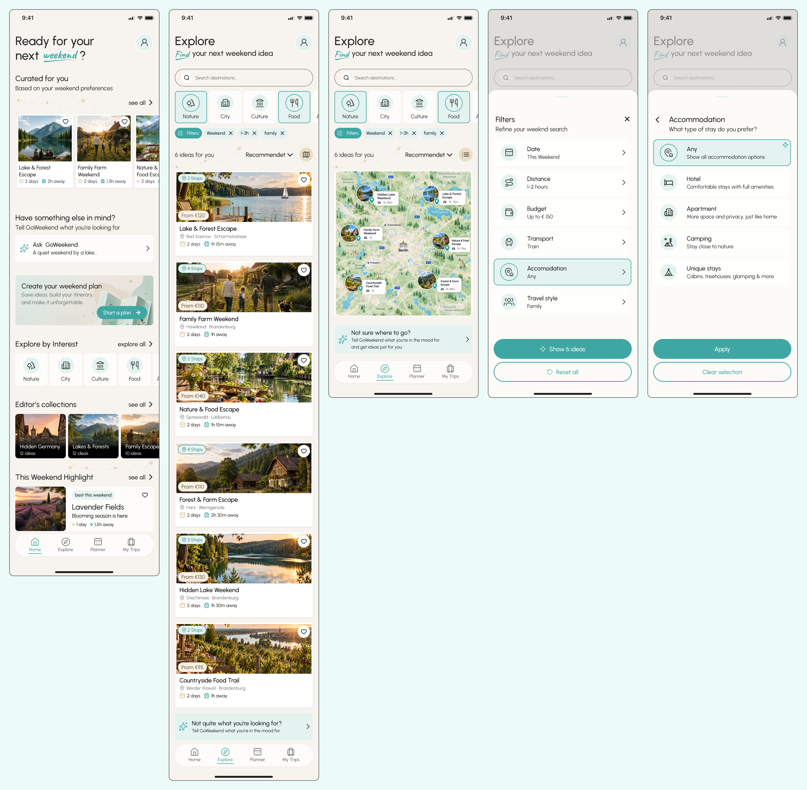
Finding an interesting destination is only the beginning. Users also need to understand whether a trip fits their available time, budget and travel preferences.
Trip Details brings together an overview of the experience, route information, activities, estimated costs and useful links before users decide to add the trip to their plan.
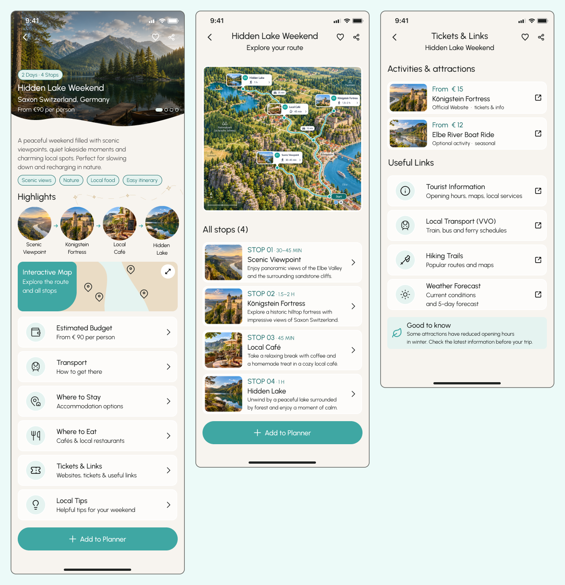
A suggested itinerary can provide a useful starting point without requiring users to follow a fixed schedule.
The Weekend Planner organizes activities by day and allows users to review and adjust their itinerary, bringing the essential planning details into one place.
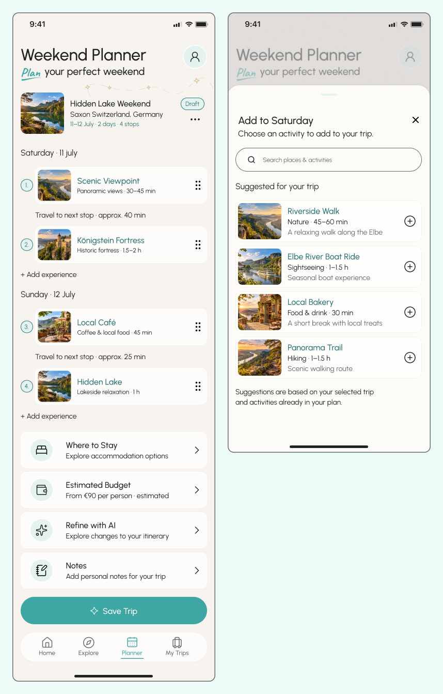
Weekend planning does not end when users choose a scenario. They may want to review details, revisit activities or adjust their plans before departure.
Weekend Summary provides an overview of the selected trip, while My Trips gives users a dedicated place to access their saved itineraries without starting the planning process again.
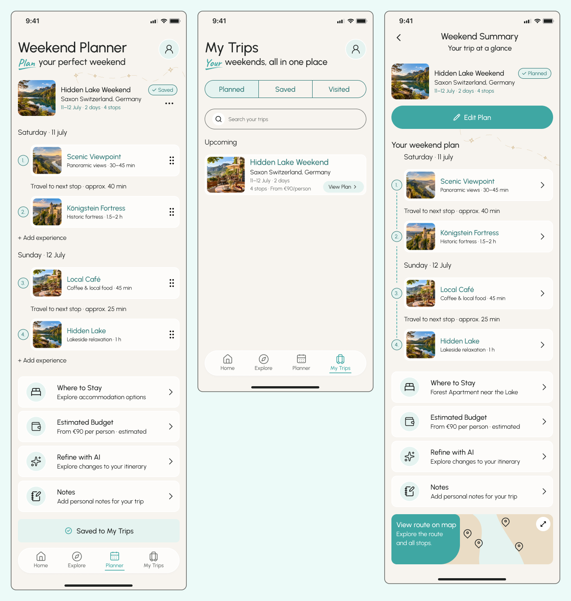
Some people know the kind of weekend they want but cannot easily translate that idea into filters. Ask GoWeekend offers an optional way to describe preferences and constraints in natural language.
The proposed assistant returns a small set of scenarios and allows users to refine the suggestions. This is an interface concept, not a tested AI implementation.
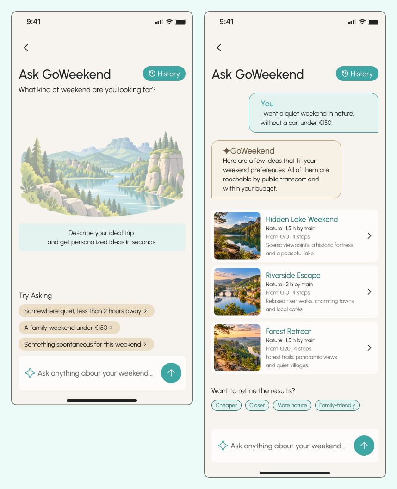
Together, these decisions create a connected experience: users can discover relevant options, make an informed choice and shape a weekend plan around their own needs.
GoWeekend developed from a broad idea about simplifying short-trip planning into a more focused concept: helping users move from uncertainty to a suitable weekend plan.
The resulting experience connects personalized discovery, understandable recommendations and flexible itinerary planning in one journey.
Recommendations reflect personal preferences and constraints.
Curated scenarios help users compare and choose.
Users can adapt and save their preferred itinerary.
Project status: UX/UI concept. The designs illustrate the intended experience; the complete product and its effectiveness have not been validated through usability testing or a production release.
Initial assumptions helped define what to investigate, but research was necessary to understand which problems deserved priority.
The value of discovery lies not only in finding possibilities, but in helping users narrow them to realistic choices.
Recommendations are most useful when they reflect meaningful constraints and support an actual decision.
Ready-made scenarios can reduce planning effort, but users still need the freedom to adapt the experience.
Next Project
PlantMatch ↗